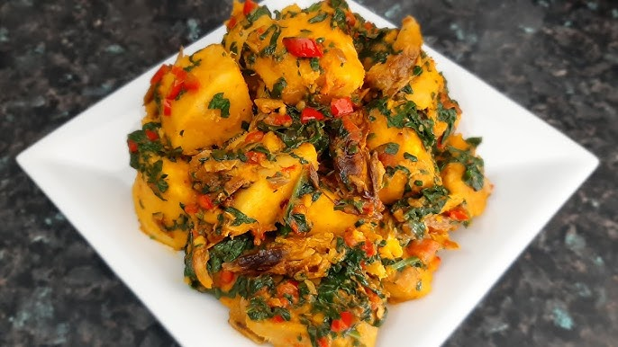

Ingredients
- ½ tuber of yam (about 1kg)
- 1 red bell pepper
- 1-2 scotch bonnet chillies (depending on your spice preference)
- 1 onion, chopped
- ½ cup palm oil (or vegetable oil)
- 1 tablespoon beef seasoning powder or stock cubes
- Salt to taste
- 1 medium fish (mackerel, smoked fish, or your preference)
- 1 cup beef stock (optional)
- 2 handfuls spinach or other leafy greens
Instructions
- Prep the Yam: Peel, cut, and rinse the yam thoroughly until the water runs clear.
- Make the Pepper Sauce: Blend the bell pepper, scotch bonnet chillies, and half of the chopped onion into a smooth sauce.
- Cook the Yam: In a large pot, add the yam pieces, blended pepper sauce, palm oil (or vegetable oil), beef seasoning, and salt. Pour in some water (around 1 cup) or the optional beef stock. Bring to a boil, then reduce heat and simmer for 25-30 minutes, or until the yam is tender.
- Add Aromatics: While the yam simmers, heat some oil in a separate pan. Fry the remaining chopped onions until translucent.
- Incorporate Protein and Aromatics: Once the yam is cooked, add the flaked fish and stir gently. Add the fried onions and simmer for another 2-3 minutes.
- Finish with Greens: Stir in your chosen leafy greens (spinach, kale, etc.) and cook for an additional 2 minutes, or until wilted.
- Serve: Enjoy your yam pottage hot!
More details
- Serves: 1 to 5
- Course: Main meal